Introduction
Anim Pose Space, which is widely used across the Anim Graph.
Generally speaking, most nodes, except Aim Offset and Layered Bone Blend node, work in local space if its pose pins are shaded white:
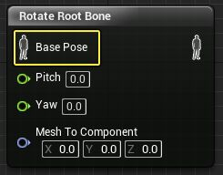
and in component space if its pose pins are shaded blue:
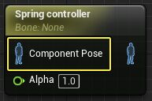
But what’s the key difference between a local space pose and a component space pose? What is happening deep inside when a space conversion is performed?
Local&Component Space Pose
Local Pose
You should override Evaluate_AnyThread(FPoseContext& Output) function if the node is calculated in local space. A FPoseContext, a struct containing a pose and a curve, is passed across animation nodes in Anim Graph Tree:
1 | /** Evaluation context passed around during animation tree evaluation */ |
This pose is in local space, which means that each bone’s transformation matrix is in relation to its parent bone.
Component Pose
You should override EvaluateComponentSpace_AnyThread(FComponentSpacePoseContext& Output) function if the node is calculated in component space.
A FComponentSpacePoseContext contains a FCSPose<FCompactPose> instead of a FCompactPose:
1 | /** Evaluation context passed around during animation tree evaluation */ |
The key difference between a FCSPose<FCompactPose> and a FCompactPose, in my opinion, is the ComponentSpaceFlags:
1 | // Flags to track each bones current state (0 means local pose, 1 means component space pose) |
This is an array to track each bone’s current state (0 means local pose, 1 means component space pose).
Space Conversion
Local To Component
FAnimNode_ConvertLocalToComponentSpace is used to convert pose from local space to component space:
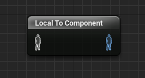
This is a cheap node because no matrix calculation is actually performed. UE4 use lazy calculation for FCSPose<FCompactPose>. In other words, a bone’s component space transform is calculated only when needed.
Lazy Calculation
Think about a pose like this:
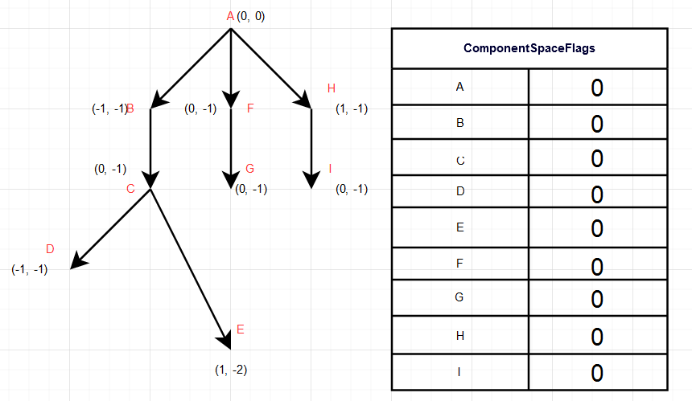
It can be easily see that all bone’s transform are in local space. Now, after a FAnimNode_ConvertLocalToComponentSpace node is evaluated, this transformation matrix is not changed at all.
When we need to use a Skeletal Control Node, let’s say, a Transform (Modify) Bone to process bone D in component space:
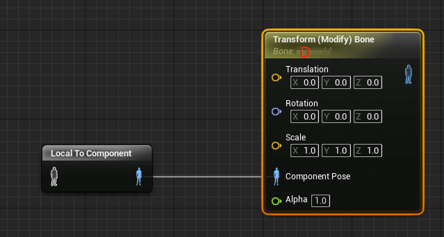
During evaluation of this node, FA2CSPose::CalculateComponentSpaceTransform function would be called to recursively calculate component space transform of bone D, C, B andA:
1 | /** Calculate all transform till parent **/ |
And the bone transformation matrix and ComponentSpaceFlags is like:
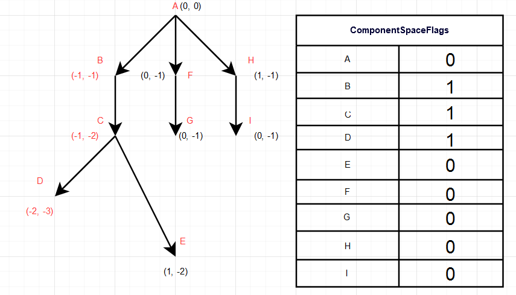
As a result, space transform calculation would be performed only when needed.
Component To Local
As for Component To Local space conversion node. Bones would be traversed from leaf to root to finally get the relative transform matrix.
Pose Blending In Different Space
Think about two poses:
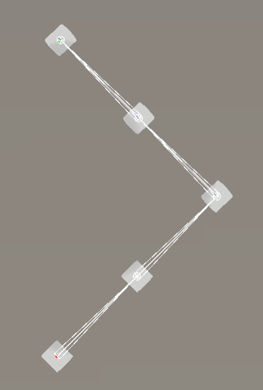
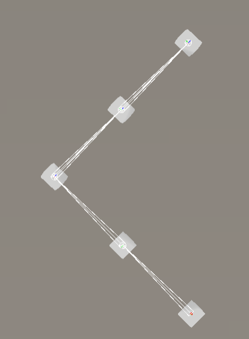
Pose blending looks different in different space.
Local Space Pose Blending
In local space, pose blending is like:
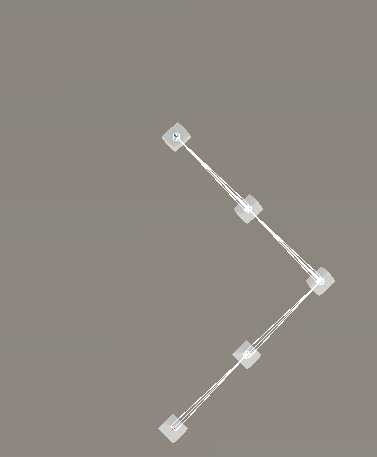
Component Space Pose Blending
In component space, pose blending is like:
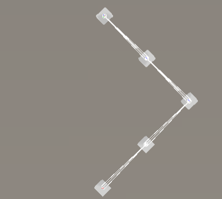
Conclusion
In order to avoid those unnecessary space-conversion calculations, please put those Skeletal Control Node together.
Moreover, you can modify or add your own anim node to get rid of those space-conversion node. You can refer to this blog for more info.
And, we have our own blend list node to support blending in different spaces:
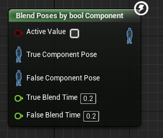
You can try to implement this node because it’s not difficult at all.